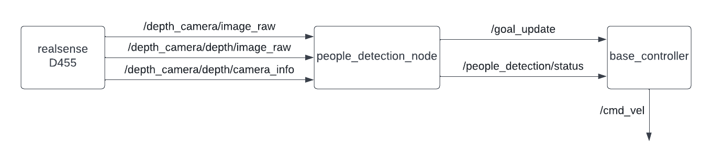

People Perception¶
Overview¶
Package for face recognition and people perception for Cacao mobile robot paticipate in ROBOCUP use with navigation to do people following task
Architecture¶
{kind=link}
people_detection_scripts.py
Tracking people and send their position to base_controller.py
/goal_update[geometry_msgs/PoseStamped]
Publish people position in xy coordinate relative to map to bt naigator for following dynamic object
/people_detection/status[std_msgs/Uint8]
Publish status of the node (0=wait for command,1=running,2=succeed,-1=fail)
/depth_camera/image_raw[sensor_msgs/Image]
Subscribe RGB image from D455
/depth_camera/depth/image_raw[sensor_msgs/Image]
Subscribe depth image from D455
/depth_camera/depth/camera_info[sensor_msgs/CameraInfo]
Subscribe camera info from D455
/people_detection/enable[std_srvs/Empty]
Call when you want to enable publish tf tranfrom people position to rviz2
/people_detection/arrival[std_srvs/Empty]
Call when you want to tell the robot that you arrive at destination and stop tracking
base_controller.py
Recieve position from people_detection_scripts.py and compute wheel effort to control actuator for people following
/cmd_vel[geometry_msgs/Twist]
Publish publist linear velocity and angular velocity of robot to wheel controller node
/goal_update[geometry_msgs/PoseStamped]
Subscribe tracking position
/people_detection/status[std_msgs/Uint8]
Subscribe status of people follower status(status 1 = follow otherwise stop)
Concept(How does it work?)¶
def imageCallback(self, data):
cv_image = self.br.imgmsg_to_cv2(data)
self.h, self.w = cv_image.shape[:2]
# To improve performance, optionally mark the image as not writeable to
# pass by reference.
cv_image.flags.writeable = False
cv_image = cv2.cvtColor(cv_image, cv2.COLOR_BGR2RGB)
results = self.pose.process(cv_image)
# Draw the pose annotation on the image.
cv_image.flags.writeable = True
cv_image = cv2.cvtColor(cv_image, cv2.COLOR_RGB2BGR)
self.detect_people = False
# Flip the image horizontally for a selfie-view display.
if results.pose_landmarks!=None:
mid_x_shoulder = (results.pose_landmarks.landmark[self.lmPose.LEFT_SHOULDER].x + results.pose_landmarks.landmark[self.lmPose.RIGHT_SHOULDER].x)/2 * self.w
mid_y_shoulder = (results.pose_landmarks.landmark[self.lmPose.LEFT_SHOULDER].y + results.pose_landmarks.landmark[self.lmPose.RIGHT_SHOULDER].y)/2 * self.h
mid_x_hip = (results.pose_landmarks.landmark[self.lmPose.LEFT_HIP].x + results.pose_landmarks.landmark[self.lmPose.RIGHT_HIP].x)/2 * self.w
mid_y_hip = (results.pose_landmarks.landmark[self.lmPose.LEFT_HIP].y + results.pose_landmarks.landmark[self.lmPose.RIGHT_HIP].y)/2 * self.h
self.point_x = int((mid_x_shoulder + mid_x_hip)/2)
if self.point_x > self.w-1:
self.point_x = self.w-1
elif self.point_x < 0:
self.point_x = 0
self.point_y = int((mid_y_shoulder + mid_y_hip)/2)
if self.point_y > self.h-1:
self.point_y = self.h-1
elif self.point_y < 0:
self.point_y = 0
cv2.circle(cv_image, (self.point_x,self.point_y), 0, (0,0,255), 20)
self.detect_people = True
cv2.imshow('MediaPipe Pose', cv2.flip(cv_image, 1))
cv2.waitKey(1)
in imageCallback we use mediapipe to track center of the human body and get 2D coordinate on camera plane.The minimum body part that need to appear in front of cemra is half the body.Then when node recieve enable service it will save 2D coordinate and wait for imageDepthCallback method callback tu publish 3D coordinate relative to base frame of robot
def imageDepthCallback(self, data):
try:
#get image from msg
depth_image = self.bridge.imgmsg_to_cv2(data, data.encoding)
[depth_y, depth_x] = depth_image.shape[:2]
#mediapipe pose
# self.get_logger().info(f"{depth_image.shape}")
if self.intrinsics:
if self.detect_people and self.follow_enb:
# self.get_logger().info("publish coordinate")
x_depth = int(self.point_x * depth_x / self.w)
y_depth = int(self.point_y * depth_y / self.h)
depth = depth_image[y_depth, x_depth]
XYZ = rs2.rs2_deproject_pixel_to_point(self.intrinsics, [x_depth, y_depth], depth)
t = TransformStamped()
# Read message content and assign it to
# corresponding tf variables
t.header.stamp = self.get_clock().now().to_msg()
t.header.frame_id = 'camera_link'
t.child_frame_id = 'user'
# Turtle only exists in 2D, thus we get x and y translation
# coordinates from the message and set the z coordinate to 0
self.x_pos = XYZ[2]/1000.0
self.y_pos = -XYZ[0]/1000.0
t.transform.translation.x = XYZ[2]/1000.0 # mm to m
t.transform.translation.y = -XYZ[0]/1000.0# mm to m
t.transform.translation.z = 0.0
# Send the transformation
self.tf_broadcaster.sendTransform(t)
except CvBridgeError as e:
print(e)
return
imageDepthCallback method compute 3D coordinate relative to base frame of robot using pyrealsense2 libraly.It need depth image published by realsense camera
Test environment¶
Ubuntu 20.04
Ros foxy
Ubuntu kernel 5.11
Installation¶
ros package
sudo apt-get install ros-foxy-cv-bridge sudo apt-get install ros-foxy-realsense2-camera sudo apt-get install ros-foxy-realsense2-camera-msgs sudo apt-get install ros-foxy-realsense2-description
python package
pip install mediapipe pip install pyrealsense2
Example¶
Open terminal in your GUI
In the same terminal run
ros2 launch face_recognitions people_detection.launch.py
It will show camera feed tracking position of the body
Open new terminal, run this command to start people follower
ros2 service call /people_detection/enable std_srvs/srv/Empty
This command must be run when people_detection_scripts.py still tracking person otherwise it will not activate peole follower
To end people follower type this command in terminal
ros2 service call /people_detection/arrival std_srvs/srv/Empty
Problem and future plan¶
tf listener is too slow for updating robot position and publish person coordinate relative to fixed frame map.We suggest to subscribe /tf topic for robot position because it is robot position relative to odom so we can compute person coordinate relative to fixed frame map